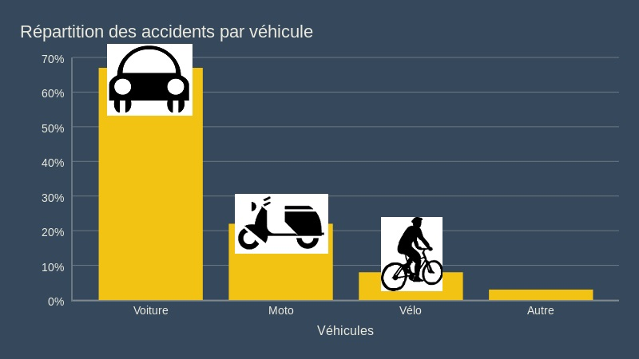

dans la semaine
4,7% des accidents ont lieu à proximité d'une école 
155
-33%
210
Le goûter idéal se compose d'un aliment céréalier, d'un produit laitier et d'un fruit ou d'un jus de fruit.
Pour un enfant ou un adolescent, le goûter doit représenter 10% des apports journaliers. Cependant, dans la grande distribution, les bienfaits de ces produits sont cachés dans les longues listes d'ingrédients. Nous avons donc décrypté pour vous ces étiquettes : comparez aujourd'hui facilement les marques de la grande distribution et les différents produits.